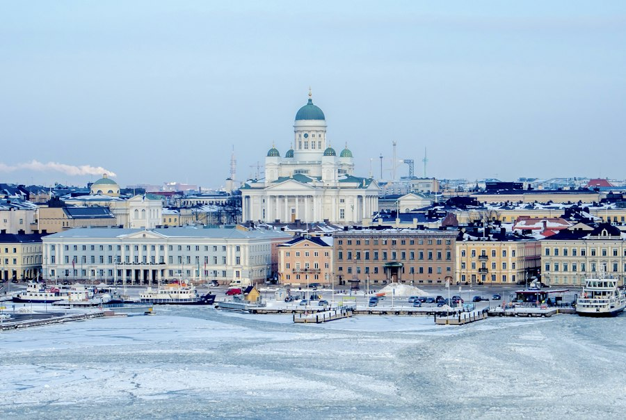

Hi, I'm Julius.
JN design is a small web studio in Helsinki, and I do everything myself: design, code and launch. When you get in touch, you talk directly to the person building your site.
I use AI and modern tools so the work moves fast. The design and the final result are still my decisions, and your site isn't assembled from a ready-made template.
I build sites for small businesses, freelancers and associations that want a clear website without a long project or monthly fees.

- Based in
- Helsinki
- Languages
- Finnish, Swedish and English
- Tools
- HTML, CSS, JavaScript, GSAP and AI